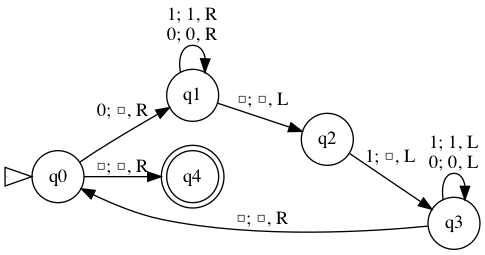
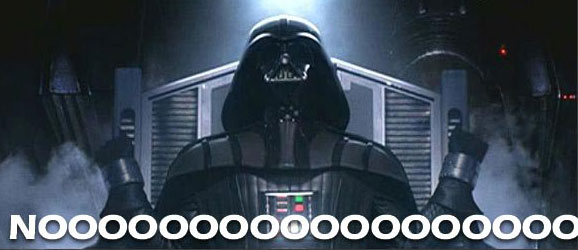

Finite state machines
Contents
Finite state machines#
Toepassingen van computers#
Simulaties
Graphics
Websites
…
Bouwstenen#
Functies
Schakelingen
Objecten
Wat kan een computer allemaal berekenen?#
Wat is een computer?
Wat is berekenen?
Informatica#
Bewijzen wat een computer kan berekenen
En wat niet!
Wat is een computer?#
Computer zijn state machines.
Welke state machine is dit?#

Game of Life!#

Onderliggende idee: toestanden#

De state of toestand van een berekening is alle interne informatie die nodig is om de volgende stap te bepalen
Toestanden zijn subtaken#
0 x*** -> N 0 0 N*** -> x 1 1 ***x -> S 1 1 ***S -> x 0

Wat is een berekening?#
Een bewust overgang van de ene toestand naar de andere

Door een waarde te schrijven verandert de toestand van het geheugen
Computer#
Een computer heeft ook een toestand: de inhoud van het geheugen en de registers.
Dus: een computer is een state machine
Een eindig aantal toestanden (waarom?)
Een computer is dus een finite state machine
Finite state machines#

Begintoestand: open pijltje
Accepterende toestand: dubbele cirkel
Transities (overgangen): pijlen tussen toestanden
Invoer: een string (bijvoorbeeld
01011)
Berekening#
Invoer:
01011De invoer wordt van links naar rechts gelezen
In welke toestand eindigt de machine?
Wat betekenen de toestanden?
Accepteren en afwijzen#
Toestand 0: even aantal
1’en gezienToestand 1: oneven aantal
1’en gezienDeze machine accepteert dus invoerstrings met een oneven aantal
1’en, en wijst strings met een even aantal1’en af.Dit heet een beslissingsprobleem

Quiz#

Hoe zou je de invoer die door deze machine afgewezen wordt kunnen beschrijven?
Kan hetzelfde probleem ook met minder toestanden opgelost worden?

Deze machine wijst invoer af als er twee
1’en naast elkaar staans0: De invoer eindigt op een0s1: De invoer eindigt op één1s2: De invoer bevat twee opeenvolgende1’enHier zijn twee transities, die allebei weer naar
s2gaan
Finite state machines zijn overal!#


Ook in AI in spellen#

En in zelfrijdende auto’s#

Quiz#
Pas deze finite state machine aan zodat deze alle strings accepteert waar ten minste twee 1’en in voorkomen; ze hoeven niet naast elkaar te staan. Je hebt nog ten minste 1 nieuwe toestand nodig.
0101,00010110,111011en11worden geaccepteerd.0100,1000,000000,1en0worden afgewezen.


Pas deze finite state machine aan zodat deze alle strings afwijst die het patroon 110 bevatten. Je hebt hier geen nieuwe toestanden voor nodig, maar wel nieuwe transities.
1010001en011worden geaccepteerd.101001100en01101worden afgewezen.


Teken een finite state machine die alle strings accepteerd waarin het aantal 0’en een veelvoud van drie is. 1’en tellen niet mee.
Tip: Deze machine lijkt op een driehoek!
110101110,11en0000010worden geaccepteerd.101,0000en111011101111worden afgewezen.

Kan je alles berekenen met een FSM?#
Zijn er beslissingsproblemen die een finite state machine niet kan oplossen?
Bijvoorbeeld: een finite state machine die alleen strings accepteert die bestaan uit een aantal
0’en, gevolgd door hetzelfde aantal1’en.0011en000111worden wel geaccepteerd011en0001worden niet geaccepteerd

Je kan wel tot een eindig getal tellen, maar niet oneindig ver.
Je zou een oneindig aantal toestanden nodig hebben!
Dat is dus geen finite state machine meer.
Een krachtiger model#
We hebben een krachtiger model nodig
Wat kunnen we toevoegen om dit model krachtiger te maken?
Geheugen!#
Met deze uitbreiding heet dit een Turingmachine
Een computer heeft ook geheugen, maar dit werd eerder toch een finite state machine genoemd
Wat voor soort geheugen zou een Turingmachine dan nodig hebben?
Turingmachine#


Transities: Lezen; Schrijven, Bewegen
Transities#
Lezen: Welk teken staat nu bij de lees/schrijfkop?
Schrijven: Vervang dat teken door dit teken
Bewegen: De lees/schrijfkop gaat naar Links of Rechts (of blijft Staan)
Zie ook deze video van Computerphile over Turingmachines.
Alan Turing#

Brits wiskundige en codebreker (Enigma)
Turingcompleetheid#
Alle computers die we nu kunnen bedenken kunnen alleen berekenen wat een Turingmachine kan berekenen
Als een programmeertaal dit ook kan, noemen we die taal Turingcompleet
Ja, quantumcomputers vallen hier ook onder!
Maar een Turingmachine is niet erg efficiënt!
Kan een Turingmachine dan alles berekenen?#
